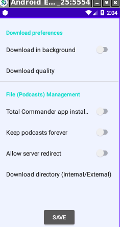

Documentation
First time application start
On first time application start the app displays the settings screen.

You have the following options:
- Download in background: Switch this on if you whish the app to try to download all current podcast episodes in background as long as the device is on wifi.
- Download quality: Select lower (approx 22 MB/podcast), or higher (approx 44 MB/podcast).
- Total Commander (TC) app installed: This is a file management app which I do like. It comes together with a media player, so that it can be used for playing the podcasts as well. If TC is installed, then it will be used as the app of choice for file management (under the options menu).
You will be asked to allow the app to access the storage space of the device.
The app will not function if you deny access to the storage.
The main screen displays a list of downloadable or already downloaded podcasts.

If a podcast has already been downloaded, then it appears in green color,otherwise red. One tip in the left column starts either the download(color red), or playing the podcast (color green). For playing the podcast, the player of choice can be used.

There is a menue for starting a file manager (might be necessary to install a suitable filemanager e.g. Total Commander app), accessing the settings, documentation, about page as well as the open source licenses of the used libraries.

The downloaded podcasts are stored by default in a subfolder "BBCWorldServicePodcasts" of the root folder of the internal storage of the device. Each podcast has a size of approx 22 MB (44 if you choose higher download quality).
On my device this is the folder "/storage/emulated/0/BBCWorldServicePodcasts".
It is a good idea to remove all downloaded podcasts from time to time in order to save storage space and to avoid a filled up storage.
I hope you enjoy using the app!